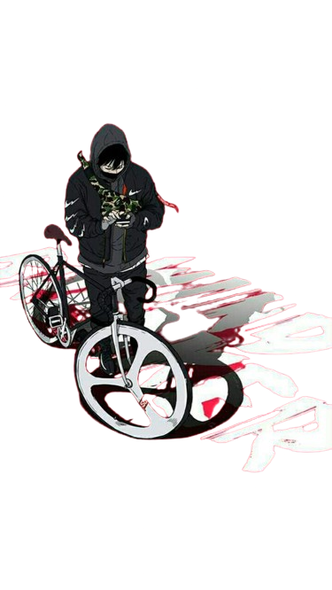

Join Us! Create your own library.

About Us
-
What is Daisy Scans?
Daisy Scans is a free Manga-Manhua-Manhwa-Webtoon-LightNovel reading site where you can read online/offline and create your owl library for free with High Quality resolution and accurate translation. You can also download any story you want without registration or payment required. Everything is free!
-
Is DaisyScans safe?
Yes. We started this site to improve UX and are committed to keeping our users safe. We encourage all our users to notify us if anything looks suspicious. Please understand that we do have to run advertisements to maintain the site.
Updates
Omniscient Reader POV
31.6M
Action
Wind Breaker
31.6M
Action
Lookism
31.6M
Action
FAQ
-
How do I add manga to my library?
- Browse or Search: Use the search bar or browse the categories to find the manga you want to add.
- Select Manga: Click on the manga title to view its details.
- Add to Library: Look for the "Add to Library" button or icon and click it. The manga will be added to your personal library, where you can access it anytime.
If you're logged in, your library will be synced across all your devices. For new users, you may need to create an account to save your selections.
-
Can I read manga offline?
Answer: Yes, you can read manga offline! To do so, you need to download the chapters or volumes you want to read. Here’s how:
- Download Content: Navigate to the manga you wish to download. There should be a "Download" or "Save for Offline" option.
- Check Downloads: Ensure that the download process is complete before you go offline.
- Access Offline: Open the app and go to your library or downloaded content section to read your downloaded manga without an internet connection.
Please note that downloaded content may have expiration dates or limited availability based on licensing agreements.
-
How do I adjust the reading settings?
- Open Settings: Go to the app’s settings menu, usually accessible from the main menu or user profile.
-
Customize Reading Preferences: Look for options such as:
- Reading Mode: Choose between horizontal or vertical scrolling.
- Brightness and Background Color: Adjust the brightness or change the background color for a more comfortable reading experience.
- Text Size: Increase or decrease the text size if available, especially useful for text-heavy manga.
- Save Changes: Apply and save your settings to ensure they take effect the next time you read.